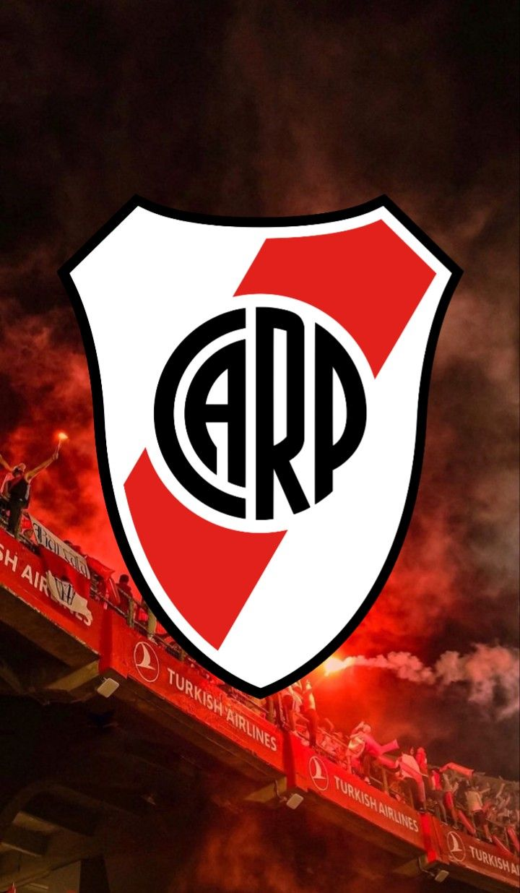

¿Qué es River Plate?
River Plate es el equipo que más temporadas disputó en la Primera División del fútbol argentino, con 110 participaciones (22 en el Amateurismo y 88 en el Profesionalismo). Es el equipo más ganador de la historia del profesionalismo del Fútbol Argentino con 36 campeonatos de Primera División, 13 copas nacionales y 17 copas internacionales.
